5 Reproducible Documents with Quarto
5.1 Overview & definitions
A reproducible document is a file (or a small collection of files) that combines written content—text, tables, figures, equations—with the code or instructions required to generate that content. The goal is simple but powerful: given the same data and the same code, the document can be regenerated with identical results.
Reproducible documents are foundational to transparent and verifiable research. They allow others (including your future self) to inspect how results were produced, verify claims, and extend the work without guesswork or manual reconstruction. In applied analytics, this also means fewer copy–paste errors and a clearer audit trail from data to insight.
Closely related is the idea of literate programming, a way of writing programs where code and explanation live together. Instead of treating documentation as an afterthought, literate programming treats explanation as a first-class component of the work. Code is embedded alongside human-readable text that explains why something is done, not just how.
The modern reproducible workflow blends these two ideas: you write explanations in natural language, embed executable code, and generate polished outputs from a single source.
5.2 A Quarto course as a publishing project
A Quarto course is best understood as a book-like publishing project: a folder of plain-text source files, code, images, references, data, and configuration that can be repeatedly rendered into student-facing materials.
This framing is adapted from Kieran Healy’s discussion of using Quarto to write a book, where he emphasizes a set of practical demands for long-form, code-supported writing: keep the manuscript in plain text, generate figures from the code that explains them, let the publishing system handle numbering and references, and make it easy to render finished outputs repeatedly.
For a course, the same demands become:
- keep the course source in
.qmd,.yml,.bib,.py,.R,.csv, and other versionable files - avoid copy-pasting figures, outputs, and tables when they can be generated from source
- let Quarto handle navigation, chapter numbering, figure numbering, cross-references, citations, and bibliographies
- render the course repeatedly as the semester evolves
- use one source folder to produce the website, handouts, slides, assignment pages, and archives
This is why Quarto matters for teaching. It is not just a nicer Markdown format. It is the system that keeps course explanation, computation, evidence, and publication in one coherent workflow.
5.3 Reasonable demands for a Quarto course
Before choosing tools, define what the course workflow should be able to do.
| Demand | Course Meaning |
|---|---|
| Plain-text source | Materials can be searched, reviewed, diffed, and version controlled |
| Generated figures and tables | Course examples stay connected to the code or data that produced them |
| Automatic structure | Numbering, navigation, cross-references, and citations do not drift by hand |
| Repeatable rendering | The instructor can rebuild the site after every meaningful update |
| Multiple outputs | The same source can produce web pages, slides, PDFs, and archives |
| Shareable package | Colleagues and future instructors can understand how the course was made |
These demands are modest, but they are powerful. They move the course away from a folder of disconnected files and toward a reproducible teaching artifact.
5.4 Literate programming in practice
Literate programming follows a simple pattern:
- Write explanations in a natural language
- Interleave those explanations with short, meaningful code snippets
- Treat the document itself as the primary artifact
From this single source file, two key operations are possible:
- Weaving: producing a finished document that includes code, outputs, figures, and narrative
- Tangling: extracting the code into a standalone script that can be run independently
Historically, this approach appeared in the R ecosystem as Sweave, which combined LaTeX for text and mathematics with embedded R code. This was later generalized and simplified through knitr and R Markdown.
Today, Quarto supersedes these tools across both R and Python ecosystems. It supports:
- Multiple programming languages
- Multiple output formats
- Integration with Jupyter notebooks
- Polyglot documents that mix languages in a single file
For this course, Quarto is the unifying layer that connects analysis, writing, and publishing.
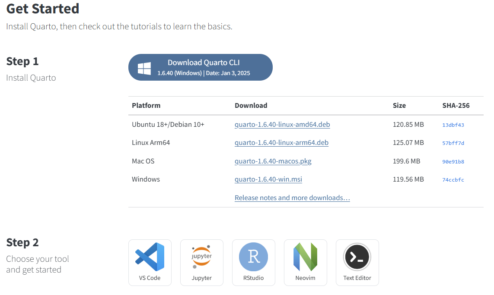
5.5 Reproducible documents
Reproducible documents are the practical application of literate programming to analytics, research, and communication.
The workflow looks like this:
- Place text and code in the same document
- Ensure the code has access to the data it needs
- Render (weave) the document so results appear inline
- Regenerate the document whenever data or assumptions change
If the inputs do not change, the output does not change. That is reproducibility.
Because the source file contains both logic and explanation, readers can always trace results back to their origin. The same source can also be reused to create multiple outputs—for example, a report, a slide deck, and a website—without rewriting the analysis.
The primary goal is not to document code. The goal is to produce documents: reports, slides, websites, blogs, books.
Code exists to serve the output, not the other way around.
5.6 Tool-sets
Reproducible documents combine two components:
- Natural language text (with a lightweight markup)
- A scripting or programming language
Common toolsets include:
| Toolset | Natural language text | Scripting language | Requirement |
|---|---|---|---|
| Sweave | LaTeX | R | |
| Jupyter notebooks | Markdown | Python and other kernels | |
| R Markdown | Markdown | R (plus Python, shell, others) | |
| Quarto | Markdown | R, Python, Julia, JavaScript, others | Independent |
Many other literate programming systems exist, but Quarto provides the broadest and most modern foundation for analytics-focused work.
5.7 Programming languages and environment
This chapter assumes you already have a basic analytics environment available. You do not need to master every tool immediately, but you should ensure the following are installed and accessible:
- Python (or Anaconda)
- R
- Jupyter
- Quarto
- An editor such as RStudio, VS Code, or Antigravity
Cloud-based tools such as Google Colab can be used as alternatives in some cases, but local installation is preferred for reproducibility and long-term projects.
If you encounter installation issues, MET IT can assist with setting up the required software for the course.
5.8 Markdown
Optional content
This section can be covered briefly in class. Students can review and practice at their own pace.
Markdown is a lightweight markup language that allows you to format plain text using simple, readable syntax. It is widely used for documentation, reports, and web content because it is easy to write and easy to convert into formats such as HTML, PDF, and Word.
Markdown matters because it sits at the center of modern reproducible workflows.
5.8.1 Why Markdown is used in analytics
Markdown supports:
- Documentation: clear explanations alongside code
- Readability: structured text without visual clutter
- Collaboration: easy review and editing by teams
- Version control: clean diffs in Git compared to binary formats
- Presentation: seamless integration of text, code, and visuals
- Reproducibility: concise pairing of explanation and execution
- Portability: platform-independent plain text files
- Efficiency: minimal syntax, focus on content rather than formatting
Files such as README.md, .qmd, .rmd, and even Jupyter notebooks rely heavily on Markdown.
5.8.2 Learning Markdown
Markdown is intentionally simple. You do not need to memorize everything at once.
Common uses in data science include:
- Writing
README.mdfiles - Creating reports and assignments
- Documenting code and analysis notebooks
A concise reference is available here: Markdown cheat-sheet
5.8.3 Common Markdown commands
- Headers:
#,##,###for section headings - Emphasis:
*italic*,**bold** - Lists: ordered (
1.) and unordered (-) - Links:
[text](URL) - Images:
 - Blockquotes:
> - Inline code:
`code` - Code blocks: triple backticks
- Horizontal rules:
---or___ - Tables:
|and-syntax - Escaping characters:
\
You will gradually use these throughout the course as they appear naturally in assignments and projects.
5.9 LaTeX
Optional content This section can be covered briefly in class. Students can return to it when writing mathematical expressions, proofs, or formal reports.
LaTeX is not required for everyday writing in this course. However, basic familiarity with LaTeX-style mathematics is essential, especially for equations, models, and formal notation used in analytics, statistics, and machine learning.
5.10 What LaTeX is (and why it matters)
LaTeX is a typesetting system designed for producing high-quality documents with complex structure, especially those containing mathematics, equations, references, and formal layouts.
Key ideas to understand:
- LaTeX uses plain text with markup commands to describe structure and meaning
- Content and presentation are deliberately separated
- Formatting decisions are handled by document classes and templates
- Mathematical notation is a first-class citizen
Because of this, LaTeX has become the standard for:
- Academic papers
- Theses and dissertations
- Journal submissions
- Technical and scientific documentation
Documents written in LaTeX are typically compiled into PDF files using engines such as pdflatex or xelatex.
For this course:
- You will mostly write in Markdown
- You are not expected to be a LaTeX expert
- You are expected to understand and use LaTeX math syntax when writing equations
Markdown-based tools (R Markdown, Quarto, Jupyter) all rely on LaTeX under the hood for math rendering.
5.11 When you actually need LaTeX
You will encounter LaTeX most often in three situations:
Mathematical expressions
- Equations
- Models
- Constraints
- Optimization problems
Formal reasoning
- Proof sketches
- Theorems and propositions
- Definitions and assumptions
Publishing constraints
- Journals and conferences often provide LaTeX templates
- Universities commonly distribute LaTeX thesis classes
Even when writing Markdown or Quarto documents, math is still written using LaTeX syntax.
5.12 Strengths of LaTeX
The main strength of LaTeX is its semantic clarity:
- You describe what something is, not how it should look
- Equations scale correctly across formats
- Mathematical notation is precise and unambiguous
- Documents remain readable and editable as plain text
This is why LaTeX remains dominant in STEM disciplines.
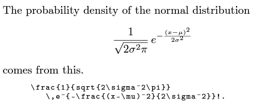
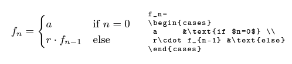
5.13 Writing mathematics with LaTeX
You will most often use LaTeX inside Markdown or Quarto, not in standalone .tex files.
5.13.1 Math modes
$ ... $- Inline math, used within sentences$$ ... $$- Display math, centered and on its own line\begin{equation} ... \end{equation}- Numbered equations with labels\begin{align} ... \end{align}- Aligned, multi-line equations with numbering
Use inline math for symbols and short expressions, and display math for models and derivations.
5.14 Core LaTeX math commands
These commands cover most equations you will write in this course.
$ $- Inline mathematical expressions$$ $$- Display mathematical expressions\begin{equation} ... \end{equation}- Numbered equations\begin{align} ... \end{align}- Multi-line aligned equations\frac{a}{b}- Fractions\sqrt{x}- Square roots\sum,\prod- Summations and products\int- Integrals
\frac{d}{dx}- Derivatives\frac{\partial}{\partial x}- Partial derivatives\lim- Limits\infty- Infinity\pm,\mp- Plus/minus symbols\cdot,\times- Multiplication\left( \right)- Auto-sized brackets\alpha,\beta, … - Greek letters^,_- Superscripts and subscripts
Example-
x^2→ (\(x^2\))a_{ij}→ (\(a_{ij}\))
5.15 Proofs, definitions, and theorems (conceptual)
While you will not write full formal proofs in this course, LaTeX provides standard structures for:
- Definitions
- Assumptions
- Propositions
- Theorems
- Proof sketches
In Markdown and Quarto, these are often expressed using headings and math blocks, rather than full LaTeX environments. The emphasis is on clarity of reasoning, not rigid formalism.
5.16 Installing LaTeX for PDF output
To generate PDFs from Quarto or R Markdown, a LaTeX installation is required.
Instead of installing a full LaTeX distribution, we recommend using TinyTeX, a lightweight setup managed directly by Quarto.
Install TinyTeX with:
quarto install tinytexThis installs LaTeX locally for Quarto only and does not interfere with other software.
To make TinyTeX available system-wide:
quarto install tinytex --update-pathFor reference:
- Quarto PDF engines: https://quarto.org/docs/output-formats/pdf-engine.html
- Other Quarto tools: see Section
#sec-tools
5.17 Learning resources
You do not need to memorize LaTeX. Use references as needed.
Recommended resources:
LaTeX Math for Undergraduates http://tug.ctan.org/info/undergradmath/undergradmath.pdf
Learn LaTeX in 30 Minutes https://www.overleaf.com/learn/latex/Learn_LaTeX_in_30_minutes
LaTeX Tutorial https://latex-tutorial.com/tutorials/
5.18 Mathpix: a practical helper
- Mathpix: https://mathpix.com/
Mathpix converts images of handwritten or printed equations into LaTeX, Markdown, or MathML. It is especially useful when:
- Transcribing equations from slides or papers
- Converting handwritten notes into clean math
- Avoiding manual typing errors
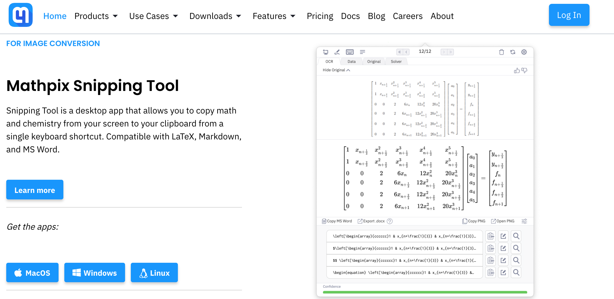
5.19 Markdown with code execution (R Markdown)
Optional content This section provides historical and conceptual grounding. Students do not need to master R Markdown, but understanding it helps explain how modern reproducible tools evolved.
Markdown on its own is a lightweight way to write structured text. What made it transformative for data science was the ability to execute code inside Markdown documents and embed the results directly into the output.
That idea is what R Markdown introduced.
5.20 What R Markdown adds to Markdown
At its core, R Markdown extends Markdown by allowing you to:
- Write narrative text in Markdown
- Embed executable R code chunks
- Automatically insert tables, figures, and results
- Render everything into a polished document
Mathematics written using LaTeX syntax works seamlessly inside R Markdown documents, which is why it became widely adopted in statistics, analytics, and academic research.
Conceptually, R Markdown sits between:
- literate programming (Sweave)
- and modern multi-language publishing tools (Quarto)
5.21 Historical context
Markdown was originally created as a text-to-HTML tool so writers could produce web pages without writing raw HTML.
R Markdown builds on this idea by creating a noweb-style system for analytics:
- Text is written using Markdown
- Code is embedded in fenced code blocks
- Outputs are inserted during rendering
R Markdown was built on top of Yihui Xie’s knitr package and inherited most of its capabilities.
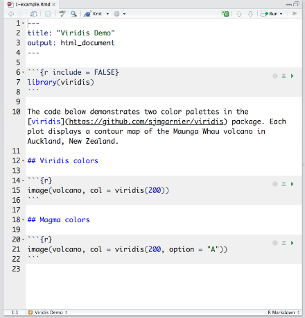
This design was inspired by Sweave.
- Narrative text uses Markdown syntax
- Code chunks are delimited using
```{r} - Chunk options control execution, visibility, and formatting
- Results are automatically woven into the document
5.22 Code chunks (conceptual)
In R Markdown, executable code is written inside code chunks. Each chunk:
- Has a language (most commonly R)
- Can be executed during rendering
- Can show or hide code, output, warnings, or messages
You do not need to memorize chunk options now. The key idea is that code and explanation live in the same document, and the document itself becomes reproducible.
5.23 Pandoc: the publishing engine underneath
R Markdown relies on Pandoc, a universal document converter that makes Markdown-based publishing powerful and flexible.
Pandoc allows a single source document to be converted into many output formats without rewriting content.
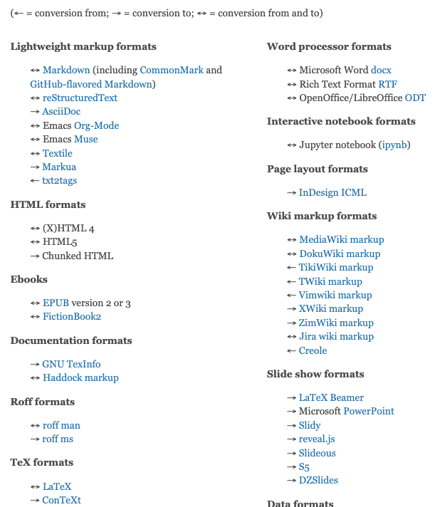
Pandoc supports a wide range of formats.
For this course, the most relevant are:
- HTML
- Word
- PowerPoint
This capability is what enables “single source, many outputs.”
5.24 What an R Markdown document looks like
The structure of an R Markdown document typically includes:
- A small metadata header (YAML)
- Markdown text
- Code chunks
- Embedded outputs (tables, figures, equations)
The image below shows how code, output, and narrative coexist naturally in a single document.

5.25 The R Markdown ecosystem
R Markdown developed a large ecosystem due to its extensibility. It has been used to create:
- Reports and documents
- Interactive documents and dashboards
- Presentations
- Books (via bookdown)
- Websites
- Journal-ready manuscripts (via rticles)
This ecosystem is one reason R Markdown became the dominant reproducible reporting tool in statistics and analytics for many years.
5.26 Why we do not focus on R Markdown directly
While R Markdown is still widely used, it is no longer the recommended end point for new projects.
Its ideas live on—and are expanded—in Quarto, which:
- Supports multiple programming languages
- Uses the same Markdown foundation
- Builds on Pandoc
- Unifies workflows across R, Python, and Jupyter
For students, the takeaway is:
Learn Markdown well. Understand how code execution works inside documents. Use Quarto as the modern, language-agnostic successor.
5.27 Jupyter
Optional content This section provides context. Jupyter is widely used and worth understanding, but it is not the final workflow we emphasize.
Jupyter introduced many students to literate, interactive computing. It combines code, text, and output in a single document and remains one of the most popular tools in data science.
5.28 JupyterLab and Jupyter Notebooks
JupyterLab is a web-based interactive development environment. It evolved from the original Jupyter Notebook interface and provides a more flexible workspace.
Core ideas:
- A kernel provides the computational engine
- Each notebook connects to exactly one kernel
- Many kernels are available beyond Python
Supported kernels include:
- Python
- R
- Julia
- SAS
- MATLAB
- JavaScript (Node.js)
- and many others (full list)
Text inside notebooks is written using Markdown, while executable code is organized into cells.
Jupyter outputs can be exported using the nbconvert tool into:
- HTML
- LaTeX
- Markdown
- and other static formats
Entire collections of notebooks can be published as books using Jupyter Book:
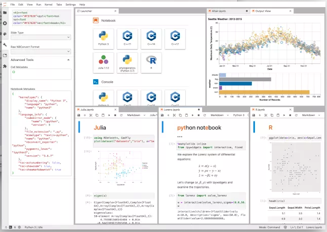
5.29 Why Jupyter is so popular
Jupyter notebooks are widely adopted because they are:
Common in Kaggle competitions and exploratory analysis
Integrated into cloud platforms such as:
- Google Colab
- Databricks
- AWS SageMaker
Usable directly inside VS Code and PyCharm
Friendly for experimentation and rapid iteration
For many learners, Jupyter is the first exposure to combining code, explanation, and output.
5.30 A structural limitation
… But

Jupyter notebooks are order-dependent.
Cells can be run in arbitrary order, which means:
- The visible code may not reflect execution order
- Hidden state can accumulate
- Reproducibility can suffer if notebooks are not carefully managed
While one can always “Run all cells” to restore order, this places responsibility on the user rather than the tool.
This limitation is not fatal, but it matters when moving from exploration to communication and publication.
5.31 Quarto
Quarto is the next generation of reproducible publishing tools, developed by Posit. It generalizes the ideas behind R Markdown and Jupyter into a single, consistent system.
5.32 Quarto overview
Quarto is a publishing framework designed for data science and technical communication.
Key characteristics:
Markdown-based Write content using Markdown, including code and math.
Language-agnostic Supports R, Python, Julia, JavaScript, and any Jupyter kernel.
Reproducible by design Documents are rendered top-to-bottom with controlled execution.
Multiple outputs HTML, PDF, Word, PowerPoint, and more.
Interactive Supports interactive tables, charts, and widgets.
Extensible Plugins, filters, and custom layouts are supported.
Quarto treats documents as products, not notebooks or scripts.
5.33 IDEs, languages, and Quarto (clarifying roles)
- IDE commonly used with R
- Runs code chunks inside
.qmdfiles
- Programming language
- Can be run as scripts (
Rscript file.R)
5.33.1 +
- IDE commonly used with Python
- Runs cells inside
.ipynbnotebooks
- Programming language
- Can be run as scripts (
python file.py)
Quarto sits above these tools and languages. It does not replace them; it coordinates them.
5.34 R Markdown and Quarto
Quarto builds on many ideas from R Markdown while expanding their scope.
| rmarkdown | quarto |
|---|---|
| Requires R | Language-agnostic |
| Mature ecosystem | Modern, unified system |
Uses knitr |
Uses knitr or Jupyter |
| Multiple rendering engines | Uses Pandoc exclusively |
| Basic Markdown | Extended Markdown (callouts, tabsets, layouts) |
Additional notes:
- Most Pandoc-based R Markdown documents render in Quarto
- Some legacy tools (e.g.,
xaringan) are not compatible - Jupyter notebooks can be used directly as Quarto sources
- Any Jupyter kernel can be used, not just Python
5.35 RMarkdown & Quarto
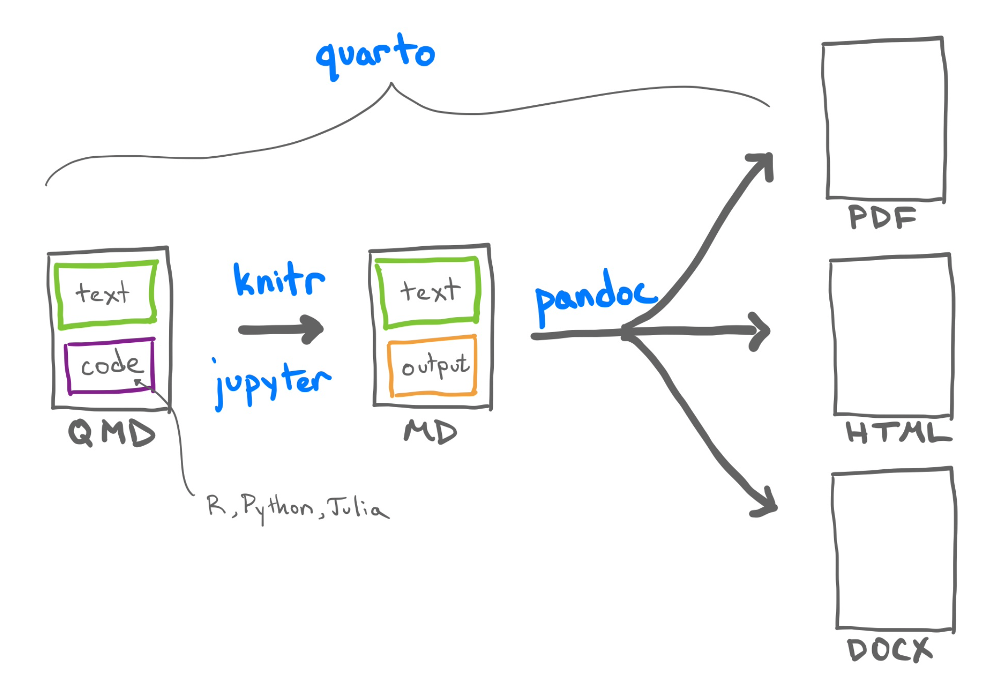
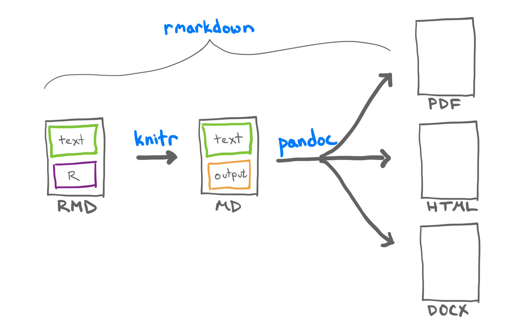
5.36 Single source, many outputs
A central idea behind Quarto is single source publishing.
From one source document containing:
- Text
- Code
- Results
- Figures
You can generate:
Documents
- HTML
- Word
Presentations
- HTML
- PowerPoint
- Websites and blogs
- Books
- Dashboards
- Interactive reports
- Journal-ready articles
Most R Markdown documents already follow this philosophy; Quarto makes it consistent across languages.
5.37 Installation
Quarto is a standalone application, not an R or Python package.
Installation instructions:
5.38 So, do we like Quarto?
Yes — with nuance.
R Markdown continues to work well and remains widely used
Jupyter is excellent for exploration and teaching
Quarto unifies both approaches and adds:
- Better structure
- Better publishing
- First-class Python support
- Strong presentation tools
There is nothing “wrong” with R Markdown or Jupyter.
Quarto extends their ideas and gives Python an equivalent of what R users have long had: a serious, reproducible publishing workflow.
Its strongest advantage is not computation, but communication.
Great choice — this works very well as a capstone framing for the chapter. Below is a clean, student-facing decision guide that is concise, principled, and aligned with how you actually want them to work in the course. It avoids tool evangelism and focuses on intent.
5.39 Choosing the right tool: a practical guide
This course exposes you to multiple tools not because you must use all of them, but because different stages of analytical work call for different environments.
The goal is not tool loyalty. The goal is clarity, reproducibility, and communication.
Jupyter is best suited for exploration and experimentation.
Choose Jupyter if you are:
- Exploring a new dataset
- Testing ideas interactively
- Prototyping models or visualizations
- Learning a new library or API
- Working in cloud environments (Colab, Databricks, SageMaker)
- Iterating rapidly without worrying about final presentation
Jupyter shines when you want immediate feedback and flexibility.
Caution: Before sharing or submitting a notebook, always:
- Restart the kernel
- Run all cells top-to-bottom
- Verify that results are reproducible
R Markdown is best for R-centered analytical reporting.
Choose R Markdown if you are:
- Working primarily in R
- Creating structured reports or homework assignments
- Writing statistical analyses with embedded math
- Using an existing R Markdown template or journal format
- Building documents that rely heavily on the R ecosystem
R Markdown remains a strong and mature option, especially in R-heavy workflows.
Quarto is best for final products and public-facing work.
Choose Quarto if you are:
- Working primarily in R
- Creating structured reports or homework assignments
- Writing statistical analyses with embedded math
- Using an existing R Markdown template or journal format
- Building documents that rely heavily on the R ecosystem
R Markdown remains a strong and mature option, especially in R-heavy workflows.
Quarto is best for final products and public-facing work.
Choose Quarto if you are:
- Writing reproducible reports meant to be read by others
- Creating course deliverables (reports, slides, websites)
- Working across R and Python in the same project
- Publishing content to HTML, PDF, or Word
- Building presentations or course websites
- Planning to reuse the same content in multiple formats
Quarto emphasizes structure, consistency, and polish.
5.40 A typical workflow in this course
Most projects will naturally follow this pattern:
Explore in Jupyter
- Load data
- Experiment
- Debug
- Prototype
Formalize in Quarto
- Clean the analysis
- Add narrative and interpretation
- Insert equations and figures
- Ensure reproducibility
Publish using Quarto
- Render to HTML, PDF, or slides
- Share with instructors or peers
- Archive for future reference
You are encouraged to move between tools, not choose one forever.
5.41 A Course Module Pattern
AD688 uses Quarto not only for individual reports, but as the organizing system for a whole course. A module is a small publishing unit: lecture notes, presentation material, labs, assignments, participation activities, project milestones, and wrap-up notes all live together.
A compact module might look like this:
M01/
M01_highlights.qmd
M01_LN1.qmd
M01_P1.qmd
M01_Lab1.qmd
M01_A.qmd
M01_Proj.qmd
M01_Wrapup.qmdThe filenames are intentionally boring. That is a feature. Students and instructors can predict where each piece belongs, and the LMS map can point to stable source files.
| File | Purpose |
|---|---|
M01_highlights.qmd |
short module overview and learning objectives |
M01_LN1.qmd |
lecture notes or reading material |
M01_P1.qmd |
presentation or reveal.js slides |
M01_Lab1.qmd |
guided practice |
M01_A.qmd |
graded assignment |
M01_Proj.qmd |
project milestone |
M01_Wrapup.qmd |
reflection, reminders, and next steps |
For a new course, build one complete module before scaling to the rest of the semester. One finished module teaches you more than seven empty folders.
5.41.1 Rendering the Module
Render early, especially after adding images, citations, code, or cross references:
quarto renderPreview while editing:
quarto previewThen commit the source files, not just the rendered output:
git status
git add M01 _quarto.yml
git commit -m "Add module 1 Quarto materials"
git pushThis is the core course-building loop: write in Quarto, render to check, commit the source, and push to GitHub.
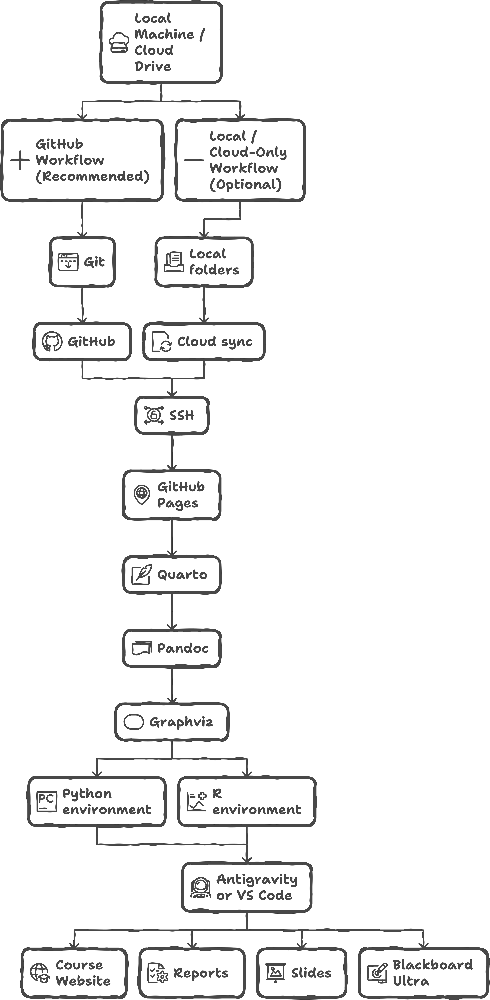
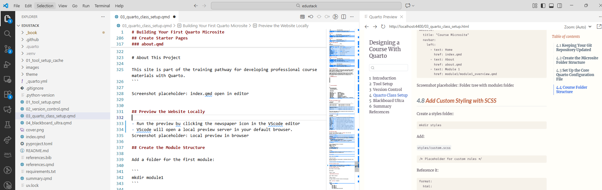
5.42 Summary table
| Task | Recommended tool |
|---|---|
| Rapid experimentation | Jupyter |
| Learning and prototyping | Jupyter |
| R-based reporting | R Markdown |
| Reproducible assignments | Quarto |
| Final reports and papers | Quarto |
| Presentations | Quarto |
| Websites and portfolios | Quarto |
| Mixed R + Python projects | Quarto |
5.43 Final takeaway
Think in terms of intent, not software.
- Jupyter helps you think
- R Markdown helps you analyze
- Quarto helps you communicate
The most important skill you will develop is not proficiency with a tool, but the ability to move cleanly from exploration to explanation.
5.44 Course requirements and practical Quarto usage
This course uses Quarto as the standard publishing system for websites, reports, and presentations.
5.44.1 Course requirements
- All project websites and presentations must be built using Quarto
- You are strongly encouraged to use
.qmdfiles, not.ipynb, for published content - Jupyter notebooks are fine for exploration, but Quarto is required for final deliverables
Functionally, .qmd and .ipynb files are similar: both are Markdown + executable code.
The key difference is execution behavior:
.ipynbstores outputs inside the file.qmdre-runs code during rendering- This improves reproducibility
- Caching options exist for expensive computations
If a .qmd file contains no code, it behaves like a standard Markdown file.
5.45 What Quarto gives you (at a glance)
Quarto allows you to combine, in one source file:
- Narrative text (Markdown)
- Mathematical notation (LaTeX-style math)
- Code (R, Python, or other kernels)
- Figures, tables, and diagrams
- Interactive and static outputs
From that single source, you can generate:
- HTML documents and websites
- PDF reports
- Word or PowerPoint files
- Presentations
- Books and blogs
This is the “single source, many outputs” principle.
5.46 A minimal Quarto example
- Inline math example: $f(x)=\frac{e^{x^2}}{2}$
$$
\begin{align}
g(x) &= x^n \\
\frac{\partial g}{\partial x} &= n x^{n-1}
\end{align}
$$If you understand this, you already understand the core of Quarto authoring.
5.47 Beyond the basics
Quarto also supports:
- Multi-column layouts
- Figure grids
- Diagrams (Mermaid, Graphviz)
- Embedded video
- Rich document metadata via YAML
You will learn these incrementally through labs and examples. You are not expected to memorize syntax at this stage.
5.48 Key takeaway
Use Jupyter to explore Use Quarto to communicate
Your goal is not to master every feature immediately, but to develop a clean, reproducible publishing habit that scales from homework to research to professional work.
5.49 Citations and bibliographies
Correct citation and attribution are non-negotiable in academic and professional work.
This is not only about avoiding plagiarism; it is about:
- intellectual honesty
- reproducibility
- traceability of ideas and evidence
In analytics and research, managing citations early saves significant time later.
5.50 How citations work in modern workflows
In Quarto (and other Pandoc-based systems), citations are data, not formatting.
The workflow is:
- Store references in a reference manager
- Export them to a citation file (usually
.bib) - Cite sources using short citation keys
- Let Quarto generate the bibliography automatically
You never format references by hand.
5.51 Reference management tools
A reference manager stores, organizes, and exports citations.
Most reference managers can:
- search online databases
- import PDFs and metadata
- annotate and organize papers
- generate citation files
- insert citations into documents
Two widely used free options are:
- Zotero — https://www.zotero.org
- Mendeley — https://www.mendeley.com
Both:
- store references in a single library
- attach PDFs and notes
- provide browser extensions for one-click import
- export
.bibfiles compatible with Quarto - automatically generate citation keys
5.52 BibTeX (what you need to know)
BibTeX is a reference file format originally developed with LaTeX and now widely used across Markdown and Pandoc workflows.
You do not need to write BibTeX entries by hand, but you should understand their structure.
A typical entry looks like this:
@article{article_key,
author = {Peter Adams},
title = {The title of the work},
journal = {The name of the journal},
year = 1993,
volume = 4,
number = 2,
pages = {201--213}
}The most important part is the citation key (
article_key)This is what you use to cite the work in your document
Common entry types include:
@article@book@unpublished
5.53 Citations in Quarto
Quarto supports multiple citation file formats via Pandoc.
| Format | File extension |
|---|---|
| BibTeX | .bib |
| BibLaTeX | .bibtex |
| CSL JSON | .json |
| CSL YAML | .yaml |
| RIS | .ris |
Most students will use BibTeX (.bib).
5.54 Adding citations to a Quarto document
5.54.1 Step 1: Point to your bibliography file
In the YAML header of your .qmd file:
---
bibliography: references.bib
---5.54.2 Step 2: (Optional) Specify a citation style
Citation styles are defined using CSL (Citation Style Language) files.
Styles can be downloaded from:
Add the style to your YAML:
---
csl: nature.csl
---Place the .csl file in the same folder as your document.
5.55 Citing sources in the text
Citations are written using Pandoc syntax:
- Single citation:
[@citation_key] - Multiple citations:
[@key1; @key2]
Example:
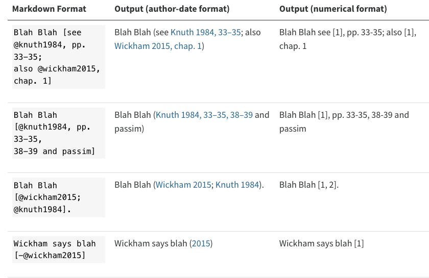
Quarto automatically:
- formats in-text citations
- generates the bibliography
- applies the selected citation style
5.56 Where the bibliography appears
Pandoc places the bibliography:
- inside a
divwith idrefsif it exists - otherwise at the end of the document
To control placement:
### References
::: {#refs}
:::5.57 Citation styles
Different fields require different citation styles.
Examples:
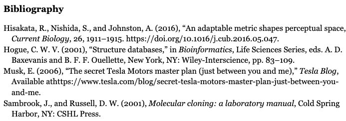
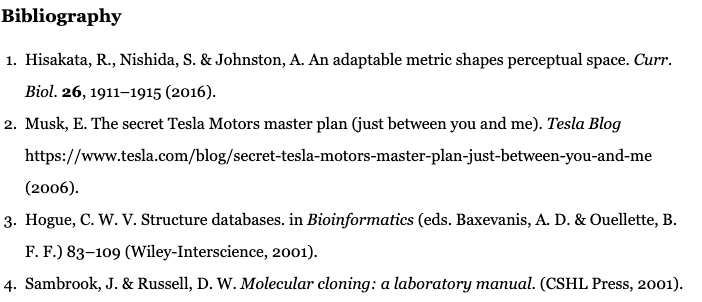
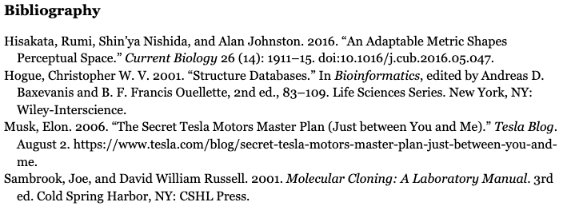
The same source file can be rendered in different styles simply by switching the .csl file.
5.58 Key takeaway
Write once. Cite with keys. Let the system format everything.
If you maintain a clean reference library and a single .bib file, citations become infrastructure, not overhead.